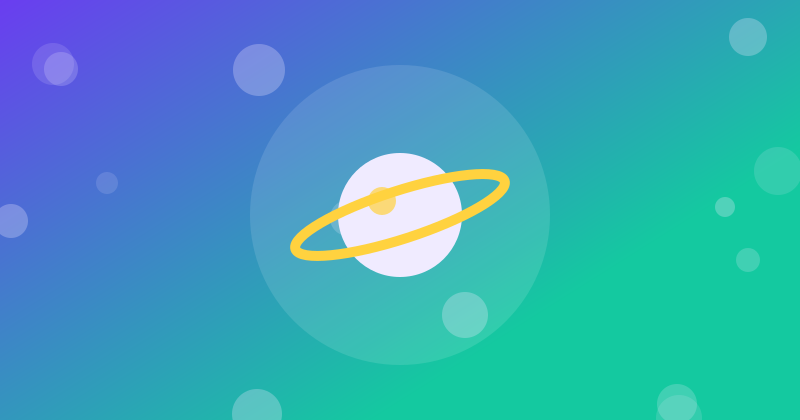

5 herramientas de IA gratis que realmente puedes usar para estudiar y trabajar en 2026
Descubre 5 herramientas de IA gratis para estudiar, trabajar, investigar, escribir y crear contenido sin pagar una suscripción.

Las mejores herramientas de IA gratis para estudiar y trabajar en 2026
La inteligencia artificial dejó de ser una curiosidad para convertirse en una herramienta que muchas personas utilizan para estudiar, trabajar, investigar, escribir y crear contenido. El problema es que cada semana aparecen nuevas aplicaciones y resulta difícil saber cuáles realmente sirven y cuáles solo llaman la atención por unos días.
Para elegir herramientas útiles no basta con preguntar cuál tiene más funciones. También conviene mirar si tiene una opción gratuita, qué tipo de tareas resuelve y qué límites tiene. En este artículo encontrarás cinco opciones que puedes probar sin comenzar pagando una suscripción.
La tendencia también se refleja en la propia búsqueda de Google. En mayo de 2026, Google informó que su Modo IA había superado los 1.000 millones de usuarios mensuales y que las consultas habían aumentado con fuerza a medida que las personas comenzaron a hacer preguntas más complejas y específicas.
5 herramientas de IA que vale la pena probar
| Herramienta | Sirve principalmente para | Plan gratis | Ideal para |
|---|---|---|---|
| ChatGPT | Escribir, estudiar, analizar archivos y generar ideas | Sí, con límites | Estudiantes y creadores |
| Gemini | Investigar, resumir, planificar y aprender | Sí, con límites | Usuarios del ecosistema Google |
| Perplexity | Buscar información y consultar fuentes | Sí, con límites | Investigación rápida |
| Canva IA | Diseñar, generar contenido visual y editar | Sí, con límites | Diseño y redes sociales |
| Microsoft Copilot | Escribir, resumir, responder preguntas y crear imágenes | Sí, con límites | Trabajo y productividad |
1. ChatGPT: una opción muy completa para empezar
ChatGPT es especialmente útil cuando necesitas convertir una idea en algo concreto. Puedes utilizarlo para entender un tema difícil, crear un esquema para una exposición, revisar un texto, generar ideas, resumir información o trabajar con archivos.
La versión gratuita ofrece acceso a varias funciones, entre ellas búsqueda web, análisis de datos, carga de imágenes o archivos y creación de imágenes, aunque existen límites de uso que pueden variar con el tiempo.
Un ejemplo práctico sería estudiar para un examen. En lugar de escribir simplemente “explícame matemáticas”, puedes pedirle que te enseñe un tema paso a paso y después que genere cinco preguntas de práctica. La calidad de la respuesta mejora cuando explicas claramente qué estás intentando aprender.
2. Gemini: útil para aprender, organizar ideas e investigar
Gemini es la propuesta de inteligencia artificial de Google y puede utilizarse para tareas como generar ideas, crear planes, resumir temas complejos y preparar borradores de textos.
Google indica que algunas funciones de Gemini pueden utilizarse sin iniciar sesión, mientras que para disponer de funciones adicionales y guardar la actividad es necesario utilizar una cuenta de Google. Los límites pueden cambiar según el modelo, las funciones y el tipo de cuenta.
Una forma sencilla de aprovecharlo es convertir una tarea grande en pequeñas partes. Por ejemplo: primero pedir un esquema, después desarrollar cada apartado y finalmente solicitar una revisión del texto completo.
3. Perplexity: una alternativa interesante para investigar
Perplexity está más orientado a la búsqueda y la investigación que a una conversación tradicional. Esto puede resultar útil cuando necesitas localizar información rápidamente y revisar de dónde procede.
Su plan Standard gratuito incluye historial de búsquedas, búsquedas básicas prácticamente ilimitadas y una cantidad limitada de búsquedas Pro. Actualmente también permite cargas de archivos básicas con restricciones.
Por ejemplo, para una investigación universitaria puedes comenzar con una pregunta específica, revisar las fuentes que aparecen y después utilizar otra herramienta para convertir la información recopilada en un resumen o esquema. La IA puede ayudarte a organizar el trabajo, pero las fuentes originales siguen siendo necesarias cuando estás preparando un trabajo académico.
4. Canva IA: para quienes necesitan contenido visual
No todo es texto. Si necesitas crear una presentación, una publicación para Instagram, una portada, una infografía o una imagen para un blog, Canva puede ahorrar bastante tiempo.
Canva ofrece herramientas de IA dentro de su plan gratuito, aunque el uso disponible es limitado y las funciones más avanzadas pueden requerir un plan de pago. Entre sus herramientas se incluyen generación de imágenes, texto a voz y otras funciones de edición asistida.
Un ejemplo sencillo es crear una publicación para redes sociales. Puedes comenzar con una idea como “5 consejos para estudiar mejor”, generar el texto y después convertirlo en un diseño visual. De esa manera, una sola idea puede transformarse en contenido para diferentes plataformas.
5. Microsoft Copilot: práctico para productividad
Microsoft Copilot tiene una versión gratuita pensada para preguntas generales, escritura, lluvia de ideas, resúmenes y tareas basadas en la web. También puede crear imágenes y utilizar búsquedas web para ofrecer respuestas actualizadas.
Puede ser especialmente práctico para personas que ya utilizan Windows, Edge o servicios de Microsoft. Por ejemplo, puedes pedirle que convierta unas notas desordenadas en una lista organizada de tareas o que te ayude a preparar el primer borrador de un correo profesional.
¿Cuál deberías utilizar?
No necesitas instalar todas las herramientas ni pagar cinco suscripciones. Para la mayoría de las personas, una combinación de dos o tres puede ser suficiente.
- Para estudiar: ChatGPT o Gemini.
- Para investigar: Perplexity.
- Para diseñar: Canva IA.
- Para productividad: Microsoft Copilot.
- Para un uso general: ChatGPT puede cubrir muchas tareas desde una sola plataforma.
También puedes combinar herramientas. Por ejemplo, puedes investigar un tema con Perplexity, organizar las ideas con ChatGPT o Gemini y finalmente crear una infografía con Canva. Así no dependes de una sola aplicación para todo.
Cómo sacar más provecho de una IA gratuita
El resultado depende mucho de la forma en que escribas la instrucción. Una petición demasiado general suele producir una respuesta genérica. Una petición concreta suele darte algo mucho más útil.
En vez de escribir:
“Hazme un resumen de inteligencia artificial.”
Prueba con:
“Explícame qué es la inteligencia artificial en 500 palabras, con ejemplos sencillos, pensando en un estudiante de 16 años y termina con 5 preguntas para practicar.”
También puedes indicar el objetivo, el público, la extensión, el formato y el nivel de dificultad. Esos pequeños detalles hacen que la herramienta tenga mucho más contexto para trabajar.
¿La inteligencia artificial puede reemplazar el estudio o el trabajo?
No debería utilizarse como sustituto automático de tu propio criterio. Las mismas plataformas advierten que sus respuestas pueden contener errores. Gemini, por ejemplo, recomienda comprobar sus respuestas y no depender de ellas para asesoramiento profesional.
La mejor forma de utilizar estas herramientas es como asistentes: que te ayuden a investigar, organizar, practicar, revisar y crear más rápido. Si copias una respuesta sin revisarla, también puedes copiar un error.
La ventaja real aparece cuando utilizas la IA para reducir tareas repetitivas y dedicar más tiempo a lo que requiere criterio humano. Para un estudiante puede significar entender un concepto más rápido; para un emprendedor, preparar contenido; y para un trabajador, organizar información o redactar un primer borrador.
Una forma sencilla de empezar hoy
Elige una sola tarea que haces con frecuencia y pruébala con una de estas herramientas. Por ejemplo, tomar apuntes y convertirlos en preguntas de estudio, transformar una idea en un artículo, resumir un documento o crear una publicación para redes sociales.
Después de unos días sabrás cuál herramienta realmente te ahorra tiempo. No se trata de utilizar la aplicación que esté más de moda, sino la que resuelva mejor el problema que tienes delante.
❓ Preguntas frecuentes
¿Cuál es la mejor herramienta de IA gratis para empezar?
Para un uso general, ChatGPT es una opción muy completa porque su plan gratuito incluye varias funciones para escribir, estudiar, analizar archivos y buscar información, aunque con límites de uso.
¿Perplexity es gratis?
Sí. Perplexity ofrece un plan Standard gratuito con búsquedas básicas prácticamente ilimitadas y límites específicos para funciones más avanzadas.
¿Canva IA se puede usar gratis?
Sí. Canva ofrece herramientas de IA dentro de su plan gratuito, aunque algunas funciones tienen límites de uso y otras opciones avanzadas requieren un plan de pago.